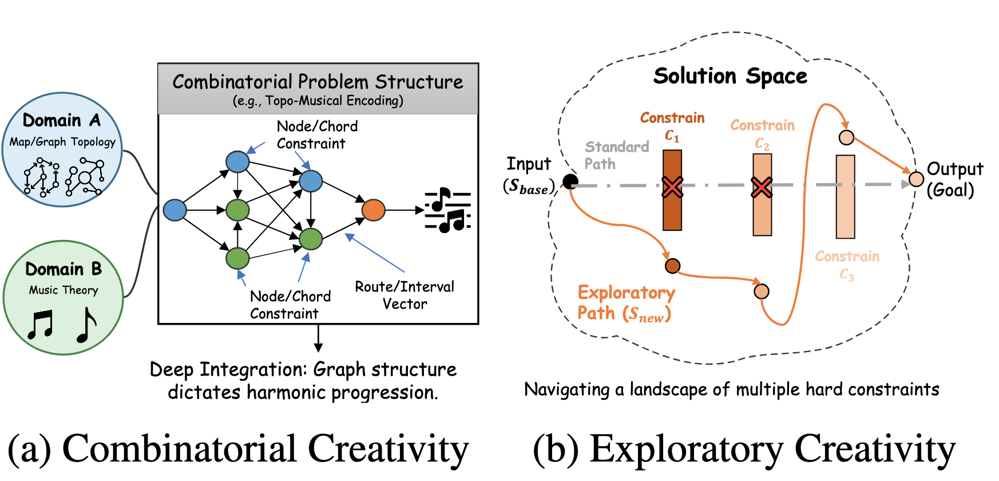
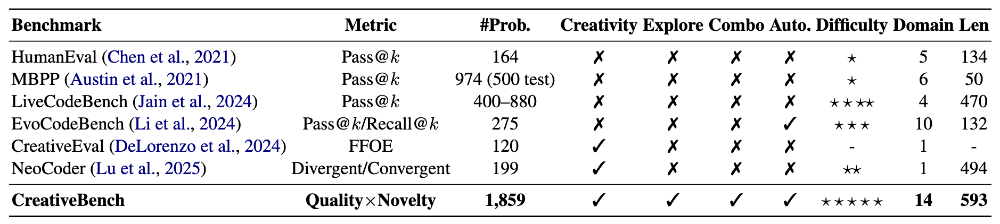
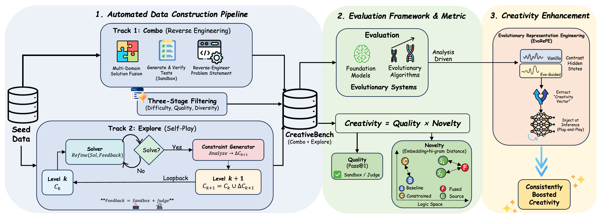
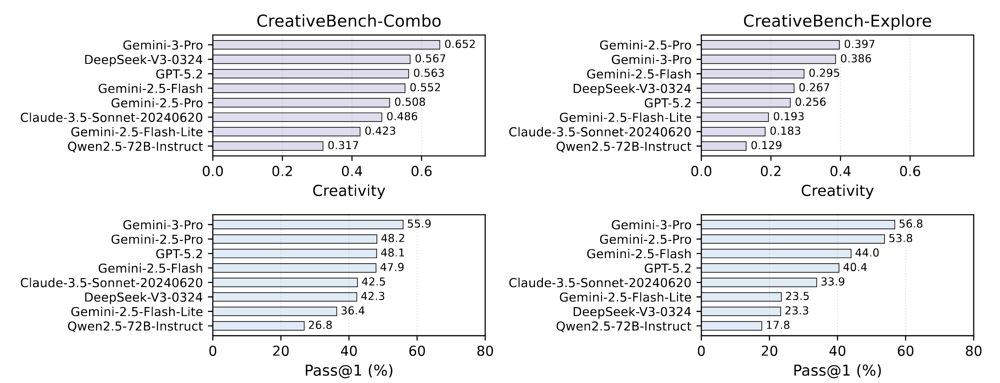
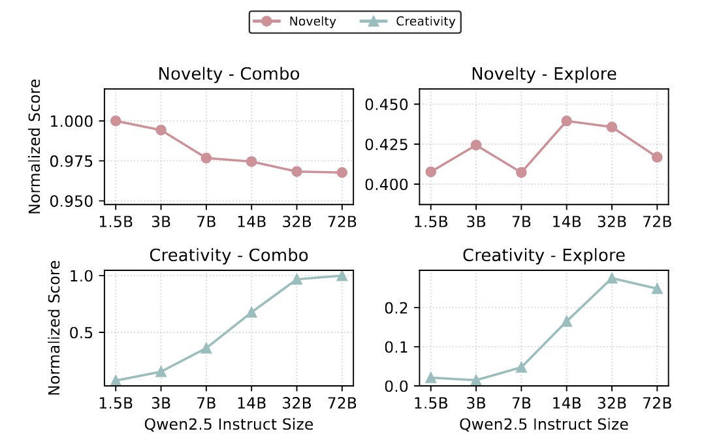
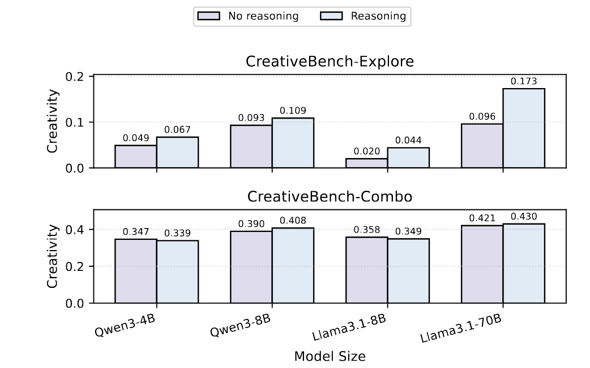
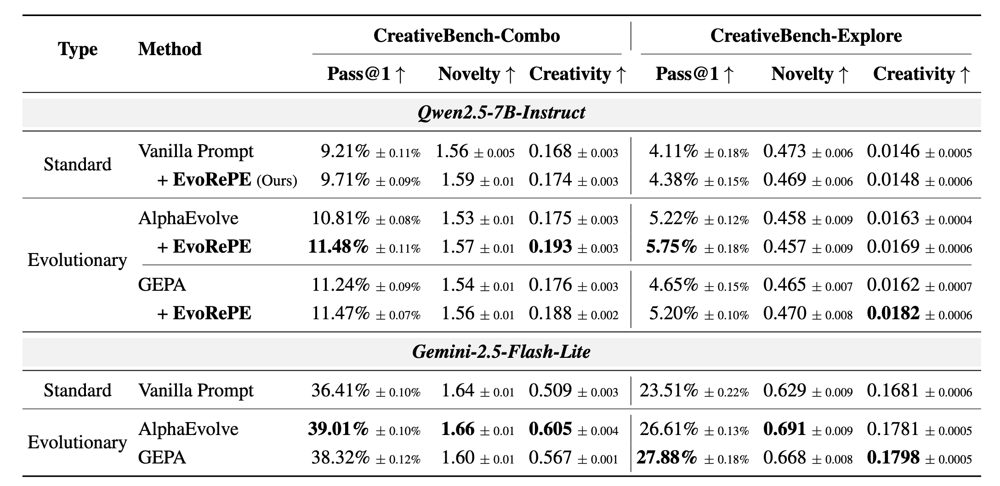

CreativeBench is designed to measure machine creativity in evolutionary code generation systems. Instead of treating creativity as a vague subjective concept, we ground evaluation in executable code and self-evolving challenges that require both correctness and novelty.
The benchmark follows Boden's cognitive framework and studies two complementary capabilities: recombining ideas across domains and exploring new solutions under structured constraints. This leads to the two benchmark subsets, CreativeBench-Combo and CreativeBench-Explore.
Code gives an execution-grounded way to distinguish genuine creativity from hallucination.
CreativeBench measures both exploratory creativity and combinatorial creativity with separate benchmark subsets.
Creativity Score is defined as Quality x Novelty, combining correctness with meaningful structural divergence.
CreativeBench separates creative problem solving into two complementary modes.
Following Boden's framework, CreativeBench focuses on combinatorial creativity, which fuses familiar concepts in unfamiliar ways, and exploratory creativity, which searches for valid alternatives under hard constraints.

Compared with prior code benchmarks, CreativeBench explicitly targets creativity, covers both combo and explore tracks, and supports automated construction at larger scale.

CreativeBench is built with a reverse-engineering and self-play pipeline, evaluated with a unified Creativity Score, and paired with EvoRePE for creativity enhancement.

Human verification reports 89.1% instance validity, and automated creativity rankings show strong agreement with expert rankings (Spearman's rho = 0.78).
Even strong frontier models remain below 60% Pass@1 on both subsets, showing that CreativeBench stays challenging while revealing a clear gap between combo and explore performance.

As model size grows, Pass@1 improves, but novelty declines or plateaus. Creativity gains therefore come mainly from correctness rather than stronger divergence.

Reasoning mode brings clear gains on exploratory creativity, but contributes much less to combinatorial creativity, suggesting different mechanisms behind the two tracks.

Beyond benchmarking, we propose EvoRePE (Evolutionary Representation Engineering), a plug-and-play inference-time steering method that extracts a creativity vector from evolutionary trajectories.
EvoRePE improves creativity in a way that is largely orthogonal to the underlying evolutionary strategy, suggesting that part of evolutionary optimization can be internalized as latent-space steering.
EvoRePE is a training-free steering method that consistently improves creativity on top of vanilla prompting and evolutionary baselines, showing that some benefits of evolution can be internalized in representation space.
